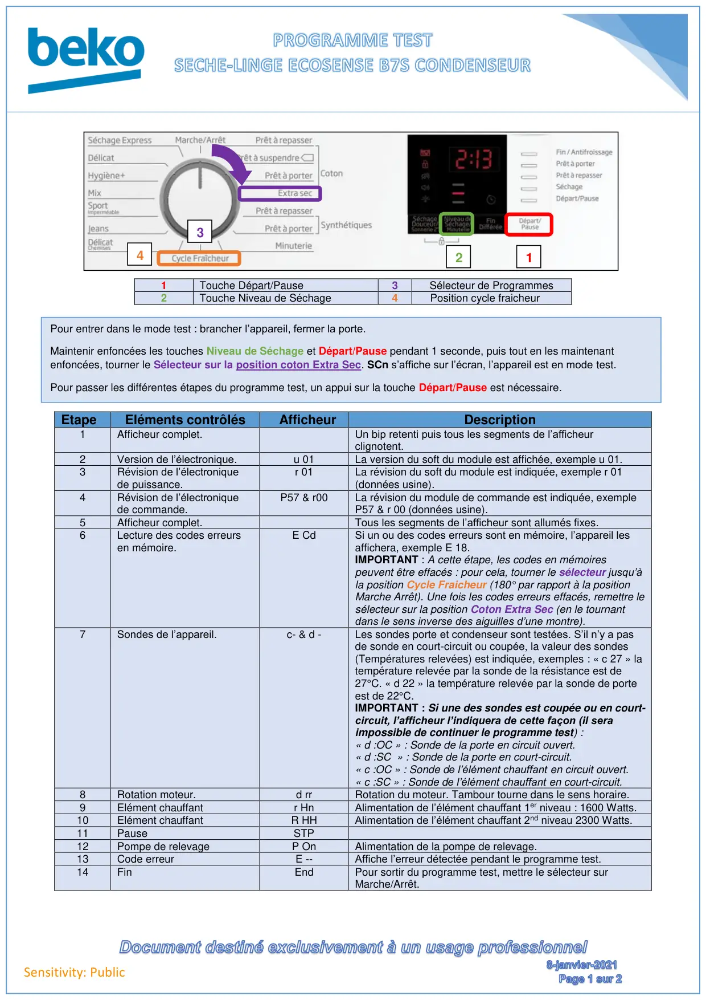
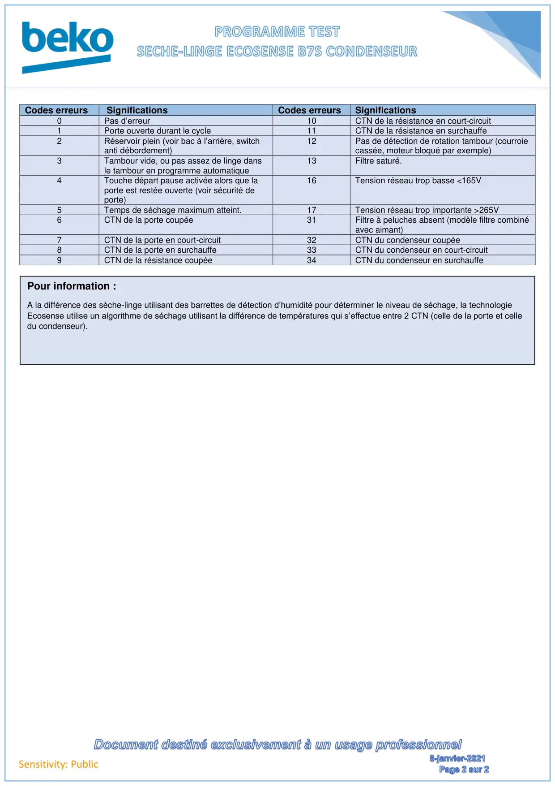

Prog Test seche linge Condenseur Ecosense B7S

Sensitivity: Public1Touche Départ/Pause3Sélecteur de Programmes2Touche Niveau de Séchage4Position cycle fraicheurEtapeEléments contrôlésAfficheurDescription1Afficheur complet.Un bip retenti puis tous les segments de l’afficheurclignotent.2Version de l’électronique.u 01La version du soft du module est affichée, exemple u 01.3Révision de l’électroniquede puissance.r 01La révision du soft du module est indiquée, exemple r 01(données usine).4Révision de l’électroniquede commande.P57 & r00La révision du module de commande est indiquée, exempleP57 & r 00 (données usine).5Afficheur complet.Tous les segments de l’afficheur sont allumés fixes.6Lecture des codes erreursen mémoire.E CdSi un ou des codes erreurs sont en mémoire, l’appareil lesaffichera, exemple E 18.IMPORTANT : A cette étape, les codes en mémoirespeuvent être effacés : pour cela, tourner le sélecteur jusqu’àla position Cycle Fraicheur (180° par rapport à la positionMarche Arrêt). Une fois les codes erreurs effacés, remettre lesélecteur sur la position Coton Extra Sec (en le tournantdans le sens inverse des aiguilles d’une montre).7Sondes de l’appareil.c- & d -Les sondes porte et condenseur sont testées. S’il n’y a pasde sonde en court-circuit ou coupée, la valeur des sondes(Températures relevées) est indiquée, exemples : « c 27 » latempérature relevée par la sonde de la résistance est de27°C. « d 22 » la température relevée par la sonde de porteest de 22°C.IMPORTANT : Si une des sondes est coupée ou en court-circuit, l’afficheur l’indiquera de cette façon (il seraimpossible de continuer le programme test) :« d :OC » : Sonde de la porte en circuit ouvert.« d :SC » : Sonde de la porte en court-circuit.« c :OC » : Sonde de l’élément chauffant en circuit ouvert.« c :SC » : Sonde de l’élément chauffant en court-circuit.8Rotation moteur.d rrRotation du moteur. Tambour tourne dans le sens horaire.9Elément chauffantr HnAlimentation de l’élément chauffant 1er niveau : 1600 Watts.10Elément chauffantR HHAlimentation de l’élément chauffant 2nd niveau 2300 Watts.11PauseSTP12Pompe de relevageP OnAlimentation de la pompe de relevage.13Code erreurE --Affiche l’erreur détectée pendant le programme test.14FinEndPour sortir du programme test, mettre le sélecteur surMarche/Arrêt.4123Pour entrer dans le mode test : brancher l’appareil, fermer la porte.Maintenir enfoncées les touches Niveau de Séchage et Départ/Pause pendant 1 seconde, puis tout en les maintenantenfoncées, tourner le Sélecteur sur la position coton Extra Sec. SCn s’affiche sur l’écran, l’appareil est en mode test.Pour passer les différentes étapes du programme test, un appui sur la touche Départ/Pause est nécessaire.
1 / 2
Sensitivity: PublicCodes erreursSignificationsCodes erreursSignifications0Pas d’erreur10CTN de la résistance en court-circuit1Porte ouverte durant le cycle11CTN de la résistance en surchauffe2Réservoir plein (voir bac à l’arrière, switchanti débordement)12Pas de détection de rotation tambour (courroiecassée, moteur bloqué par exemple)3Tambour vide, ou pas assez de linge dansle tambour en programme automatique13Filtre saturé.4Touche départ pause activée alors que laporte est restée ouverte (voir sécurité deporte)16Tension réseau trop basse <165V5Temps de séchage maximum atteint.17Tension réseau trop importante >265V6CTN de la porte coupée31Filtre à peluches absent (modèle filtre combinéavec aimant)7CTN de la porte en court-circuit32CTN du condenseur coupée8CTN de la porte en surchauffe33CTN du condenseur en court-circuit9CTN de la résistance coupée34CTN du condenseur en surchauffePour information :A la différence des sèche-linge utilisant des barrettes de détection d’humidité pour déterminer le niveau de séchage, la technologieEcosense utilise un algorithme de séchage utilisant la différence de températures qui s’effectue entre 2 CTN (celle de la porte et celledu condenseur).
2 / 2